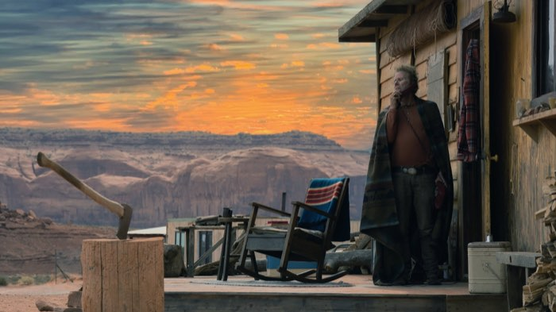
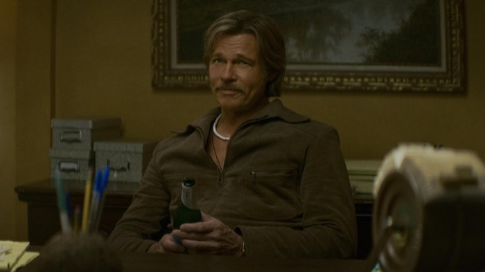
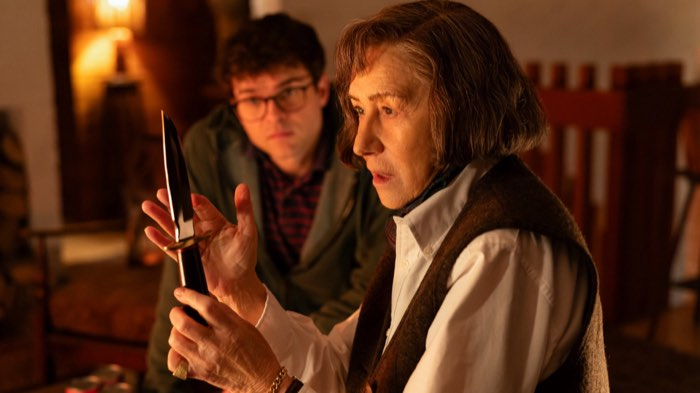

Le uscite di novembre 2026
Nove film da segnare, da Na Hong-jin a Fincher passando per Hunger Games
Novembre è il mese in cui l'autunno si prende la sala. Arrivano un horror fantascientifico coreano e un crime nero di McDonagh, ma anche il ritorno di Hunger Games. Brad Pitt, poi, è diretto da Fincher. Abbiamo scelto nove titoli, in ordine di uscita, e per ciascuno diciamo cosa ci aspettiamo. Sono giudizi d'attesa e non di visione, perché le recensioni arriveranno dopo l'uscita. Le date sono quelle italiane e, dove le fonti coincidono poco, lo scriviamo.
Hope
In una comunità isolata accade qualcosa che nessuno sa spiegare, e la quiete del posto si rompe. Dopo The Wailing, Na Hong-jin si muove tra fantascienza e horror con un cast internazionale. Per noi è il titolo più atteso del mese, perché questo regista non sa fare un film tiepido e raramente spiega troppo: ci aspettiamo una paura che lavora sull'attesa.

Wild Horse Nine
Un crime-thriller con personaggi ambigui e un umorismo spesso cupo, cioè il terreno che McDonagh conosce meglio. Con Rockwell nel cast la scommessa è tutta sui dialoghi, perché se la scrittura è all'altezza sarà la serata giusta per ridere a denti stretti, ma se manca il ritmo resta solo il cinismo.
L'essere amato
Dramma firmato dall'autore di As bestas. Il nome di Bardem basta a farne l'appuntamento per chi cerca un film adulto, perché è lontano dai franchise del mese. Il rischio è la pesantezza, dato che Sorogoyen non fa mai sconti: conviene quindi arrivarci riposati.
Godzilla Minus Zero
Il seguito di Godzilla Minus One, di nuovo diretto da Yamazaki. Il primo film aveva trasformato il mostro in una ferita collettiva, però il seguito parte con un peso diverso, perché ora il pubblico sa cosa aspettarsi. Vedremo se regge la stessa promessa oppure se si accontenta di fare più rumore.
Hunger Games - L'alba sulla mietitura
Il prequel racconta la giovinezza di Haymitch Abernathy durante la cinquantesima edizione dei Giochi. È il blockbuster del mese, ma anche un film di cui Lawrence conosce ogni regola, perché ha già diretto la saga. Il punto debole possibile è noto: un prequel sa già come finisce, quindi tutto dipende da quanto riesce a sorprenderci nel mezzo.
Fjord
Mungiu mette in tensione le persone e le regole della società in cui vivono. Il regista di 4 mesi, 3 settimane, 2 giorni raramente concede scorciatoie allo spettatore, e anche qui ci aspettiamo un film che chiede attenzione e la ripaga con le discussioni all'uscita dalla sala.
Storie parallele
Farhadi parte dal dopo degli attacchi che nel 2015 colpirono Parigi e segue persone molto diverse tra loro. Huppert e Deneuve insieme nello stesso film non si vedono spesso, quindi l'attesa è alta. Ma è un film corale, e la domanda è se le storie si tengono tra loro.

Le nuove disavventure di Cliff Booth
Brad Pitt torna a vestire i panni dello stuntman in una Los Angeles del 1977, con nuove vicende criminali e professionali, la sceneggiatura di Quentin Tarantino e la regia di Fincher. L'incontro tra i due autori è l'ingrediente più curioso, anche se resta da capire chi dei due comanda. Il titolo italiano compare così nelle fonti che abbiamo consultato e potrebbe cambiare.

Un talento per il crimine
Helen Mirren veste i panni di Patricia Highsmith. Per la data abbiamo una sola conferma italiana oltre a quella di TMDB, quindi consigliamo di ricontrollarla a ridosso dell'uscita. Chi ama i romanzi gialli d'autore lo aspetterà, ma è anche la scelta più riservata del mese, perché non ha il richiamo di un franchise.
Il mese settimana per settimana
Il 5 novembre è la settimana degli autori: Hope e Wild Horse Nine escono lo stesso giorno e chiedono due umori diversi: il primo è teso, il secondo nero e sarcastico. Il 12 si divide tra il dramma di Sorogoyen e il ritorno di Godzilla, quindi tra una serata intima e una da effetti speciali. Il 19 è la settimana più forte per gli incassi, grazie a Hunger Games, però Fjord resta l'alternativa per chi in sala cerca altro. Il 26 è il più affollato per i nomi. Fincher e Farhadi escono insieme, e con loro Corbijn: bisognerà scegliere, perché non si può vedere tutto.
Come orientarsi
Chi va al cinema una volta al mese dovrebbe scegliere in base al compagno di sala. Con gli amici funzionano Hunger Games e Godzilla Minus Zero, perché sono film pensati per essere visti insieme. In coppia o da soli conviene invece puntare su Hope o su L'essere amato. Per chi vuole discutere dopo, la combinazione migliore è Fjord seguito da una cena lunga. Le date possono però slittare di pochi giorni, quindi prima di prenotare conviene controllare la programmazione della sala.
Da segnare anche
Il 16 novembre il capolavoro di fantascienza di Kubrick, 2001: Odissea nello spazio, torna in una riedizione che vale la pena di vedere sul grande schermo, perché è un film nato per la sala. Il 23 novembre tocca invece a Your Name di Makoto Shinkai. Il 12 novembre esce anche Il rumore delle cose nuove di Paolo Genovese, con Stefano Accorsi ed Emanuela Fanelli. Per i più piccoli, il 5 novembre arriva Il gatto col cappello.
Cosa vedere per primo
Se avete una sola serata a novembre, la nostra scelta è Hope, perché ha un regista che non rassicura mai. Per una serata in compagnia vince invece Hunger Games, che è fatto per la sala piena. Chi preferisce i film d'autore ha un mese ricco: Fjord e Storie parallele chiedono più pazienza, ma sono quelli di cui si parlerà dopo, quindi vale la pena di vederli presto. Ovviamente arriveranno le nostre recensioni.
Domande frequenti
Quali film escono al cinema a novembre 2026?
Tra gli altri escono Hope (5 novembre), Wild Horse Nine (5 novembre), L'essere amato e Godzilla Minus Zero (12 novembre), Hunger Games - L'alba sulla mietitura e Fjord (19 novembre), Storie parallele, il film di Fincher con Brad Pitt e Un talento per il crimine (26 novembre).
Quando esce Hunger Games - L'alba sulla mietitura in Italia?
Esce il 19 novembre 2026. È diretto da Francis Lawrence e racconta la giovinezza di Haymitch Abernathy.
Chi dirige Hope e chi sono gli attori?
Hope è diretto da Na Hong-jin e ha come protagonisti Alicia Vikander e Michael Fassbender, accanto a Taylor Russell. Esce il 5 novembre.
Torna in sala 2001: Odissea nello spazio?
Sì, in riedizione dal 16 novembre 2026, secondo i calendari consultati.